전기기사 (2020-09-26 기출문제)
1과목: 전기자기학
1. 서로 같은 2개의 구 도체에 동일양의 전하로 대전시킨 후 20㎝ 떨어뜨린 결과 구 도체에 서로 8.6 × 10-4N의 반발력이 작용하였다. 구 도체에 주어진 전하는 약 몇 C인가?
- 5.2 × 10-8
- 6.2 × 10-8
- 7.2 × 10-8
- 8.2 × 10-8
(정답률: 67%)

2. 정전계 내 도체 표면에서 전계의 세기가
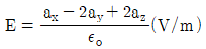
(V/m)일 때 도체 표면상의 전하 밀도 ρs(C/m2)를 구하면? 단, 자유공간이다.- 1
- 2
- 3
- 5
(정답률: 61%)
3. 영구자석 재료로 사용하기에 적합한 특성은?
- 잔류자기와 보자력이 모두 큰 것이 적합하다.
- 잔류자기는 크고 보자력은 작은 것이 적합하다.
- 잔류자기는 작고 보자력은 큰 것이 적합하다.
- 잔류자기와 보자력이 모두 작은 것이 적합하다.
(정답률: 79%)
4. 자기회로와 전기회로에 대한 설명으로 틀린 것은?
- 자기저항의 역수를 컨덕턴스라고 한다.
- 자기회로의 투자율은 전기회로의 도전율에 대응된다.
- 전기회로의 전류는 자기회로의 자속에 대응된다.
- 자기저항의 단위는 AT/Wb 이다.
(정답률: 65%)
5. 저항의 크기가 1 Ω인 전선이 있다. 전선의 체적을 동일하게 유지하면서 길이를 2배로 늘였을 때 전선의 저항(Ω)은?
- 0.5
- 1
- 2
- 4
(정답률: 65%)
6. 자속밀도가 10 ㏝/m2 인 자계 내에 길이 4㎝의 도체를 자계와 직각으로 놓고 이 도체를 0.4초 동안 1 m씩 균일하게 이동하였을 때 발생하는 기전력은 몇 V인가?
- 1
- 2
- 3
- 4
(정답률: 69%)
7. 진공 중에서 전자파의 전파속도 (m/s)는?
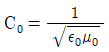
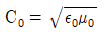
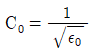
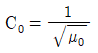
(정답률: 80%)
8. 유전율이 ε1, ε2 인 유전체 경계면에 수직으로 전계가 작용할 때 단위 면적당 수직으로 작용하는 힘 (N/m2)은? (단, E 는 전계 (V/m)이고, D는 전속밀도 (C/m2)이다.)
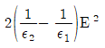
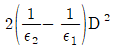
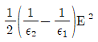
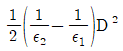
(정답률: 76%)
9. 반지름이 3㎝인 원형 단면을 가지고 있는 환상 연철심에 코일을 감고 여기에 전류를 흘려서 철심 중의 자계 세기가 400 AT/m가 되도록 여자할 때, 철심 중의 자속 밀도는 약 몇 ㏝/m2인가? (단, 철심의 비투자율은 400이라고 한다.)
- 0.2
- 0.8
- 1.6
- 2.0
(정답률: 56%)
10. 내부 원통의 반지름이 a, 외부 원통의 반지름이 b 인동축 원통 콘덴서의 내외 원통 사이에 공기를 넣었을 때 정전용량이 C1 이었다. 내외 반지름을 모두 3배로 증가시키고 공기 대신 비유전율이 3인 유전체를 넣었을 경우의 정전용량 C2 는?
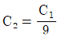
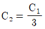
- C2=3C1
- C2=9C1
(정답률: 55%)
11. 변위전류와 관계가 가장 깊은 것은?
- 도체
- 반도체
- 자성체
- 유전체
(정답률: 80%)
12. 자기 인덕턴스(self inductance) L(H)을 나타낸 식은? (단, N은 권선수, I는 전류 (A), ø는 자속 (㏝), B는 자속밀도 (㏝/m2), A는 벡터 퍼텐셜 (㏝/m), J는 전류밀도 (A/m2)이다.)
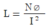
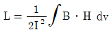
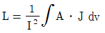
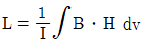
(정답률: 58%)
13. 환상 솔레노이드 철심 내부에서 자계의 세기 (AT/m)는? (단, N은 코일 권선수, r은 환상 철심의 평균 반지름, I는 코일에 흐르는 전류이다.)
- NI
- NI/2πr
- NI/2r
- NI/4πr
(정답률: 76%)
14. 임의의 형상의 도선에 전류 I(A)가 흐를 때, 거리 r(m)만큼 떨어진 점에서의 자계의 세기 H(AT/m)를 구하는 비오-사바르의 법칙에서, 자계의 세기 H(AT/m)와 거리 r(m)의 관계로 옳은 것은?
- r에 반비례
- r 에 비례
- r2에 반비례
- r2에 비례
(정답률: 66%)
15. 다음 정전계에 관한 식 중에서 틀린 것은? (단, D는 전속밀도, V는 전위, ρ는 공간(체적)전하밀도, ε은 유전율이다.)
- 가우스의 정리 : divD=ρ
- 포아송의 방정식 : ∇2V=ρ/ε
- 라플라스의 방정식 : ∇2V=0
- 발산의 정리 :
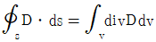
(정답률: 74%)
16. 길이가 ℓ(m), 단면적의 반지름이 a(m)인 원통이 길이 방향으로 균일하게 자화되어 자화의 세기가 J(㏝/m2)인 경우, 원통 양단에서의 자극의 세기 m(㏝)은?
- aℓJ
- 2πaℓJ
- πa2J
- J/πa2
(정답률: 69%)
17. 질량 (m)이 10-10㎏이고, 전하량 (Q)이 10-8C인 전하가 전기장에 의해 가속되어 운동하고 있다. 가속도가 a=102i+102j(m/s2)일 때 전기장의 세기 E(V/m)는?
- E=104i+105j
- E=i+10j
- E=i+j
- E=10-6+10-4j
(정답률: 65%)
18. 전류 I가 흐르는 무한 직선 도체가 있다. 이 도체로부터 수직으로 0.1 m 떨어진 점에서 자계의세기가 180 AT/m이다. 도체로부터 수직으로 0.3 m 떨어진 점에서 자계의 세기 (AT/m)는?
- 20
- 60
- 180
- 540
(정답률: 75%)
19. 반지름이 a(m), b(m)인 두 개의 구 형상 도체 전극이 도전율 k인 매질 속에 거리 r(m)만큼 떨어져 있다. 양 전극 간의 저항 (Ω)은? (단, r ≫ a, r ≫ b 이다.)
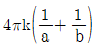
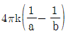
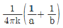
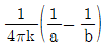
(정답률: 57%)
20. 진공 중에서 2m 떨어진 두 개의 무한 평행 도선에 단위 길이 당 10-7N의 반발력이 작용할 때 각 도선에 흐르는 전류의 크기와 방향은? (단, 각 도선에 흐르는 전류의 크기는 같다.)
- 각 도선에 2A가 반대 방향으로 흐른다.
- 각 도선에 2A가 같은 방향으로 흐른다.
- 각 도선에 1A가 반대 방향으로 흐른다.
- 각 도선에 1A가 같은 방향으로 흐른다.
(정답률: 58%)
2과목: 전력공학
21. 전력원선도에서 구할 수 없는 것은?
- 송･수전할 수 있는 최대 전력
- 필요한 전력을 보내기 위한 송･수전단 전압간의 상차각
- 선로 손실과 송전 효율
- 과도극한전력
(정답률: 71%)
22. 송전전력, 송전거리, 전선로의 전력손실이 일정하고, 같은 재료의 전선을 사용한 경우 단상 2선식에 대한 3상 4선식의 1선당 전력비는 약 얼마인가? (단, 중성선은 외선과 같은 굵기이다.)
- 0.7
- 0.87
- 0.94
- 1.15
(정답률: 48%)
23. 송배전선로의 고장전류 계산에서 영상 임피던스가 필요한 경우는?
- 3상 단락 계산
- 선간 단락 계산
- 1선 지락 계산
- 3선 단선 계산
(정답률: 78%)
24. 3상용 차단기의 정격 차단용량은?
- √3 × 정격전압× 정격차단전류
- √3 × 정격전압× 정격전류
- 3 × 정격전압× 정격차단전류
- 3 × 정격전압× 정격전류
(정답률: 78%)
25. 다음 중 송전선로의 역섬락을 방지하기 위한 대책으로 가장 알맞은 방법은?
- 가공지선 설치
- 피뢰기 설치
- 매설지선 설치
- 소호각 설치
(정답률: 69%)
26. 반지름 0.6 ㎝인 경동선을 사용하는 3상 1회선 송전선에서 선간거리를 2 m로 정삼각형 배치할 경우, 각 선의 인덕턴스 (mH/km)는 약 얼마인가?
- 0.81
- 1.21
- 1.51
- 1.81
(정답률: 58%)
27. 다음 중 그 값이 항상 1 이상인 것은?
- 부등률
- 부하율
- 수용률
- 전압강하율
(정답률: 76%)
28. 개폐서지의 이상전압을 감쇄할 목적으로 설치하는 것은?
- 단로기
- 차단기
- 리액터
- 개폐저항기
(정답률: 72%)
29. 전원이 양단에 있는 환상선로의 단락보호에 사용되는 계전기는?
- 방향거리 계전기
- 부족전압 계전기
- 선택접지 계전기
- 부족전류 계전기
(정답률: 69%)
30. 파동임피던스 Z1=500Ω인 선로에 파동임피던스 Z2=1500Ω인 변압기가 접속되어 있다. 선로로부터 600㎸의 전압파가 들어왔을 때, 접속점에서의 투과파 전압(㎸)은?
- 300
- 600
- 900
- 1200
(정답률: 56%)
31. 전력용콘덴서를 변전소에 설치할 때 직렬리액터를 설치하고자 한다. 직렬리액터의 용량을 결정하는 계산식은? (단, f0는 전원의 기본주파수, C는 역률 개선용 콘덴서의 용량, L은 직렬리액터의 용량이다.)
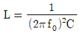
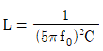
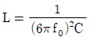
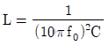
(정답률: 55%)
32. 66/22 kV, 2000 kVA 단상변압기 3대를 1뱅크로 운전하는 변전소로부터 전력을 공급받는 어떤 수전점에서의 3상 단락전류는 약 몇 A인가? (단, 변압기의 %리액턴스는 7이고 선로의 임피던스는 0이다.)
- 750
- 1570
- 1900
- 2250
(정답률: 30%)
33. 부하의 역률을 개선할 경우 배전선로에 대한 설명으로 틀린 것은? (단, 다른 조건은 동일하다.)
- 설비용량의 여유 증가
- 전압강하의 감소
- 선로전류의 증가
- 전력손실의 감소
(정답률: 58%)
34. 한류리액터를 사용하는 가장 큰 목적은?
- 충전전류의 제한
- 접지전류의 제한
- 누설전류의 제한
- 단락전류의 제한
(정답률: 71%)
35. 수력발전소의 형식을 취수방법, 운용방법에 따라 분류할 수 있다. 다음 중 취수방법에 따른 분류가 아닌 것은?
- 댐식
- 수로식
- 조정지식
- 유역 변경식
(정답률: 59%)
36. 배전선로에 3상 3선식 비접지 방식을 채용할 경우 나타나는 현상은?
- 1선 지락 고장 시 고장 전류가 크다.
- 1선 지락 고장 시 인접 통신선의 유도장해가 크다.
- 고저압 혼촉고장 시 전압선의 전위상승이 크다.
- 1선 지락 고장 시 건전상의 대지 전위상승이 크다.
(정답률: 55%)
37. 전력계통을 연계시켜서 얻는 이득이 아닌 것은?
- 배후 전력이 커져서 단락용량이 작아진다.
- 부하 증가 시 종합첨두부하가 저감된다.
- 공급 예비력이 절감된다.
- 공급 신뢰도가 향상된다.
(정답률: 64%)
38. 원자력발전소에서 비등수형 원자로에 대한 설명으로 틀린 것은?
- 연료로 농축 우라늄을 사용한다.
- 냉각재로 경수를 사용한다.
- 물을 원자로 내에서 직접 비등시킨다.
- 가압수형 원자로에 비해 노심의 출력밀도가 높다.
(정답률: 48%)
39. 선간전압이 V(kV)이고 3상 정격용량이 P(kVA)인 전력계통에서 리액턴스가 X(ohm)라고 할 때, 이 리액턴스를 %리액턴스로 나타내면?
- XP/10V
- XP/10V2
- XP/V2
- 10V2/XP
(정답률: 74%)
40. 증기 사이클에 대한 설명 중 틀린 것은?
- 랭킨사이클의 열효율은 초기 온도 및 초기 압력이 높을수록 효율이 크다.
- 재열사이클은 저압터빈에서 증기가 포화 상태에 가까워졌을 때 증기를 다시 가열하여 고압 터빈으로 보낸다.
- 재생사이클은 증기 원동기 내에서 증기의 팽창 도중에서 증기를 추출하여 급수를 예열한다.
- 재열재생사이클은 재생사이클과 재열 사이클을 조합하여 병용하는 방식이다.
(정답률: 48%)
3과목: 전기기기
41. 동기발전기 단절권의 특징이 아닌 것은?
- 코일 간격이 극 간격보다 작다.
- 전절권에 비해 합성 유기 기전력이 증가한다.
- 전절권에 비해 코일 단이 짧게 되므로 재료가 절약된다.
- 고조파를 제거해서 전절권에 비해 기전력의 파형이 좋아진다.
(정답률: 56%)
42. 전부하로 운전하고 있는 50 ㎐, 4극의 권선형 유도전동기가 있다. 전부하에서 속도를 1440 rpm에서 1000 rpm으로 변화시키자면 2차에 약 몇 Ω의 저항을 넣어야 하는가? (단, 2차 저항은 0.02 Ω이다.)
- 0.147
- 0.18
- 0.02
- 0.024
(정답률: 42%)
43. 단면적 10 cm2인 철심에 200 회의 권선을 감고, 이 권선에 60 ㎐, 60 V인 교류전압을 인가하였을 때 철심의 최대자속 밀도는 약 몇 ㏝/m2인가?
- 1.126×10-3
- 1.126
- 2.252×10-3
- 2.252
(정답률: 43%)
44. 동기기의 안정도를 증진시키는 방법이 아닌 것은?
- 단락비를 크게 할 것
- 속응여자방식을 채용할 것
- 정상 리액턴스를 크게 할 것
- 영상 및 역상 임피던스를 크게 할 것
(정답률: 57%)
45. 직류발전기를 병렬운전할 때 균압모선이 필요한 직류기는?
- 직권발전기, 분권발전기
- 복권발전기, 직권발전기
- 복권발전기, 분권발전기
- 분권발전기, 단극발전기
(정답률: 63%)
46. 4극, 중권, 총 도체 수 500, 극당 자속이 0.01 ㏝인 직류 발전기가 100 V의 기전력을 발생시키는데 필요한 회전수는 몇 rpm인가?
- 800
- 1000
- 1200
- 1600
(정답률: 67%)
47. 포화되지 않은 직류발전기의 회전수가 4배로 증가되었을 때 기전력을 전과 같은 값으로 하려면 자속을 속도 변화전에 비해 얼마로 하여야 하는가?
- 1/2
- 1/3
- 1/4
- 1/8
(정답률: 71%)
48. 2상 교류 서브모터를 구동하는데 필요한 2상 전압을 얻는 방법으로 널리 쓰이는 방법은?
- 2상 전원을 직접 이용하는 방법
- 환상 결선 변압기를 이용하는 방법
- 여자권선에 리액터를 삽입하는 방법
- 증폭기 내에서 위상을 조정하는 방법
(정답률: 43%)
49. 취급이 간단하고 기동시간이 짧아서 섬과 같이 전력계통에서 고립된 지역, 선박 등에 사용되는 소용량 전원용 발전기는?
- 터빈 발전기
- 엔진 발전기
- 수차 발전기
- 초전도 발전기
(정답률: 61%)
50. 권선형 유도전동기 2대를 직렬종속으로 운전하는 경우 그 동기속도는 어떤 전동기의 속도와 같은가?
- 두 전동기 중 적은 극수를 갖는 전동기
- 두 전동기 중 많은 극수를 갖는 전동기
- 두 전동기의 극수의 합과 같은 극수를 갖는 전동기
- 두 전동기의 극수의 합의 평균과 같은 극수를 갖는 전동기
(정답률: 64%)
51. GTO 사이리스터의 특징으로 틀린 것은?
- 각 단자의 명칭은 SCR 사이리스터와 같다.
- 온(On) 상태에서는 양방향 전류특성을 보인다.
- 온(On) 드롭(Drop)은 약 2~4 V가 되어 SCR 사이리스터보다 약간 크다.
- 오프(Off) 상태에서는 SCR 사이리스터처럼 양방향 전압저지능력을 갖고 있다.
(정답률: 44%)
52. 3상 변압기의 병렬운전 조건으로 틀린 것은?
- 각 군의 임피던스가 용량에 비례할 것
- 각 변압기의 백분율 임피던스 강하가 같을 것
- 각 변압기의 권수비가 같고 1차와 2차의 정격전압이 같을 것
- 각 변압기의 상회전 방향 및 1차와 2차 선간전압의 위상 변위가 같을 것
(정답률: 53%)
53. 직류기의 권선을 단중 파권으로 감으면 어떻게 되는가?
- 저압 대전류용 권선이다.
- 균압환을 연결해야 한다.
- 내부 병렬 회로수가 극수만큼 생긴다.
- 전기자 병렬 회로수가 극수에 관계없이 언제나 2이다.
(정답률: 70%)
54. 동기발전기의 단자부근에서 단락 시 단락전류는?
- 서서히 증가하여 큰 전류가 흐른다.
- 처음부터 일정한 큰 전류가 흐른다.
- 무시할 정도의 작은 전류가 흐른다.
- 단락된 순간은 크나, 점차 감소한다.
(정답률: 70%)
55. 전력의 일부를 전원측에 반환할 수 있는 유도전동기의 속도제어법은?
- 극수 변환법
- 크레머 방식
- 2차 저항 가감법
- 세르비우스 방식
(정답률: 42%)
56. 단권변압기에서 1차 전압 100V, 2차 전압 110V인 단권변압기의 자기용량과 부하용량의 비는?
- 1/10
- 1/11
- 10
- 11
(정답률: 65%)
57. 3상 유도전동기의 기계적 출력 P(kW), 회전수 N(rpm)인 전동기의 토크 (N･m)는?
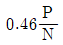
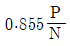
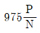
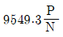
(정답률: 47%)
58. 210/1⑤ V의 변압기를 그림과 같이 결선하고 고압측에 200 V의 전압을 가하면 전압계의 지시는 몇 V 인가? (단, 변압기는 가극성이다.)
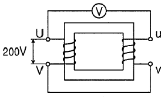
- 100
- 200
- 300
- 400
(정답률: 46%)
59. 평형 6상 반파정류회로에서 297 V의 직류전압을 얻기 위한 입력측 각 상전압은 약 몇 V 인가? (단, 부하는 순수저항부하이다.)
- 110
- 220
- 380
- 440
(정답률: 39%)
60. 3상 분권 정류자전동기에 속하는 것은?
- 톰슨 전동기
- 데리 전동기
- 시라게 전동기
- 애트킨슨 전동기
(정답률: 55%)
4과목: 회로이론 및 제어공학
61. 전달함수가
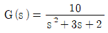
으로 표현되는 제어시스템에서 직류 이득은 얼마인가?- 1
- 2
- 3
- 5
(정답률: 62%)
62. 시스템행렬 A가 다음과 같을 때 상태천이행렬을 구하면?
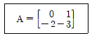
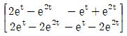
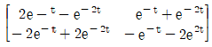
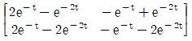
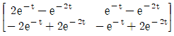
(정답률: 47%)
63. Routh-Hurwitz 안정도 판별법을 이용하여 특성방정식이 s3+3s2+3s+1+K=0으로 주어진 제어시스템이 안정하기 위한 K의 범위를 구하면?
- -1 ≤ K ＜ 8
- -1 ＜ K ≤ 8
- -1 ＜ K ＜ 8
- K ＜ -1 또는 K ＞ 8
(정답률: 65%)
64. 근궤적의 성질 중 틀린 것은?
- 근궤적은 실수축을 기준으로 대칭이다.
- 점근선은 허수축 상에서 교차한다.
- 근궤적의 가지 수는 특성방정식의 차수와 같다.
- 근궤적은 개루프 전달함수의 극점으로부터 출발한다.
(정답률: 47%)
65. 그림과 같은 블록선도의 제어시스템에서 속도 편차 상수 Kv는 얼마인가?
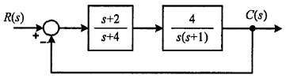
- 0
- 0.5
- 2
- ∞
(정답률: 43%)
66. 그림의 신호 흐름 선도에서 C(s)/R(s)는?
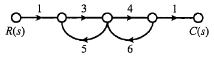
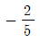
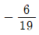
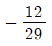
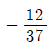
(정답률: 66%)
67. 다음 논리식을 간단히 한 것은?
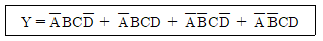
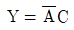
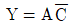
- Y=AB
- Y=BC
(정답률: 64%)
68. 전달함수가
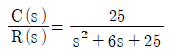
인 2차 제어시스템의 감쇠 진동 주파수(ωd)는 몇 rad/sec인가?- 3
- 4
- 5
- 6
(정답률: 30%)
69. 폐루프 시스템에서 응답의 잔류 편차 또는 정상상태오차를 제거하기 위한 제어 기법은?
- 비례 제어
- 적분 제어
- 미분 제어
- on - off 제어
(정답률: 54%)
70. r(t)의 z변환을 E(z)라고 했을 때 e(t)의 초기값 e(0)는?
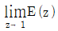
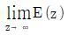
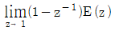
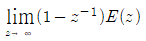
(정답률: 46%)
71. RL 직렬회로에 순시치 전압 v(t)=20+100sinωt+40sin(3ω+60°)+40sin5ωt(V)를 가할 때 제5고조파 전류의 실횻값 크기는 약 몇 A인가? (단, R=4Ω, ωL=1Ω이다.)
- 4.4
- 5.66
- 6.25
- 8.0
(정답률: 44%)
72. 대칭 3상 전압이 공급되는 3상 유도전동기에서 각 계기의 지시는 다음과 같다. 유도전동기의 역률은 약 얼마인가?
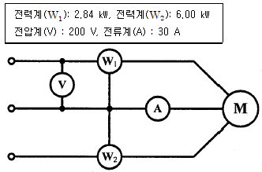
- 0.70
- 0.75
- 0.80
- 0.85
(정답률: 52%)
73. 불평형 3상 전류 Ia=25+j4(A), Ib=-18-j16(A), Ic=7+j15(A)일 때 영상전류 I0(A)는?
- 2.67+j
- 2.67+j2
- 4.67+j
- 4.67+j2
(정답률: 61%)
74. 회로의 단자 a와 b사이에 나타나는 전압 Vab는 몇 V인가?
- 3
- 9
- 10
- 12
(정답률: 54%)
75. 4단자 정수 A, B, C, D 중에서 전압이득의 차원을 가진정수는?
- A
- B
- C
- D
(정답률: 66%)
76. 분포정수회로에서 직렬 임피던스를 Z, 병렬 어드미턴스를 Y라 할 때, 선로의 특성임피던스 Zo 는?
- ZY
(정답률: 67%)
77. 그림과 같은 회로의 구동점 임피던스 (Ω)는?
(정답률: 54%)
78. Δ결선으로 운전 중인 3상 변압기에서 하나의 변압기 고장에 의해 V결선으로 운전하는 경우, V결선으로 공급할 수 있는 전력은 고장 전 Δ결선으로 공급할 수 있는 전력에 비해 약 몇 %인가?
- 86.6
- 75.0
- 66.7
- 57.7
(정답률: 55%)
79. 그림의 교류 브리지 회로가 평형이 되는 조건은?
- L=R1R2C
(정답률: 50%)
80. f(t)=tn의 라플라스 변환 식은?
- n/sn
- n+1/sn+1
- n!/sn+1
- n+1/sn!
(정답률: 65%)
5과목: 전기설비기술기준 및 판단기준
81. 다음 ( )에 들어갈 내용으로 옳은 것은?
- 전파
- 혼촉
- 단락
- 정전기
(정답률: 59%)
82. 옥내에 시설하는 저압전선에 나전선을 사용할 수 있는 경우는?
- 버스덕트 공사에 의하여 시설하는 경우
- 금속덕트 공사에 의하여 시설하는 경우
- 합성수지관 공사에 의하여 시설하는 경우
- 후강전선관 공사에 의하여 시설하는 경우
(정답률: 51%)
83. 사람이 상시 통행하는 터널 안의 배선(전기기계기구 안의 배선, 관등회로의 배선, 소세력 회로의 전선 및 출퇴 표시등 회로의 전선은 제외)의 시설기준에 적합하지 않은 것은? (단, 사용전압이 저압의 것에 한한다.)
- 합성수지관 공사로 시설하였다.
- 공칭단면적 2.5 mm2의 연동선을 사용하였다.
- 애자사용공사 시 전선의 높이는 노면상 2 m로 시설하였다.
- 전로에는 터널의 입구 가까운 곳에 전용 개폐기를 시설하였다.
(정답률: 48%)
84. 그림은 전력선 반송통신용 결합장치의 보안장치이다. 여기에서 CC는 어떤 커패시터인가?
- 결합 커패시터
- 전력용 커패시터
- 정류용 커패시터
- 축전용 커패시터
(정답률: 54%)
85. 케이블 트레이공사에 사용하는 케이블 트레이에 대한 기준으로 틀린 것은?
- 안전율은 1.5 이상으로 하여야 한다.
- 비금속제 케이블 트레이는 수밀성 재료의 것이어야 한다.
- 금속제 케이블 트레이 계통은 기계적 및 전기적으로 완전하게 접속하여야 한다.
- 저압 옥내배선의 사용전압이 400 V 이상인 경우에는 금속제 트레이에 특별 제3종 접지공사를 하여야 한다.
(정답률: 48%)
86. 지중전선로에 사용하는 지중함의 시설기준으로 틀린 것은?
- 지중함은 견고하고 차량 기타 중량물의 압력에 견디는 구조일 것
- 지중함은 그 안의 고인물을 제거할 수 있는 구조로 되어있을 것
- 지중함의 뚜껑은 시설자 이외의 자가 쉽게 열 수 없도록 시설할 것
- 폭발성의 가스가 침입할 우려가 있는 것에 시설하는 지중함으로서 그 크기가 0.5 m3 이상인 것에는 통풍장치 기타 가스를 방산시키기 위한 적당한 장치를 시설할 것
(정답률: 64%)
87. 교량의 윗면에 시설하는 고압 전선로는 전선의 높이를 교량의 노면상 몇 m 이상으로 하여야 하는가?
- 3
- 4
- 5
- 6
(정답률: 37%)
88. 목장에서 가축의 탈출을 방지하기 위하여 전기울타리를 시설하는 경우 전선은 인장강도가 몇 kN 이상의 것이어야 하는가?
- 1.38
- 2.78
- 4.43
- 5.93
(정답률: 46%)
89. 저압의 전선로 중 절연부분의 전선과 대지간의 절연저항은 사용전압에 대한 누설전류가 최대 공급전류의 얼마를 넘지 않도록 유지하여야 하는가?
- 1/1000
- 1/2000
- 1/3000
- 1/4000
(정답률: 54%)
90. 가공전선로의 지지물에 하중이 가하여지는 경우에 그 하중을 받는 지지물의 기초 안전율은 얼마 이상이어야 하는가? (단, 이상 시 상정 하중은 무관)
- 1.5
- 2.0
- 2.5
- 3.0
(정답률: 53%)
91. 제2종 특고압 보안공사 시 지지물로 사용하는 철탑의 경간을 400 m 초과로 하려면 몇 mm2 이상의 경동연선을 사용하여야 하는가?(관련 규정 개정전 문제로 여기서는 기존 정답인 4번을 누르면 정답 처리됩니다. 자세한 내용은 해설을 참고하세요.)
- 38
- 55
- 82
- 100
(정답률: 54%)
92. 금속제 외함을 가진 저압의 기계기구로서 사람이 쉽게 접촉될 우려가 있는 곳에 시설하는 경우 전기를 공급받는 전로에 지락이 생겼을 때 자동적으로 전로를 차단하는 장치를 설치하여야 하는 기계기구의 사용전압이 몇 V를 초과하는 경우인가?
- 30
- 50
- 100
- 150
(정답률: 30%)
93. 사용전압이 35,000 V 이하인 특고압 가공전선과 가공약 전류 전선을 동일 지지물에 시설하는 경우, 특고압 가공전선로의 보안공사로 적합한 것은?(관련 규정 개정전 문제로 여기서는 기존 정답인 3번을 누르면 정답 처리됩니다. 자세한 내용은 해설을 참고하세요.)
- 고압 보안공사
- 제1종 특고압 보안공사
- 제2종 특고압 보안공사
- 제3종 특고압 보안공사
(정답률: 52%)
94. 과전류차단기로 시설하는 퓨즈 중 고압전로에 사용하는 비포장 퓨즈는 정격전류 2배 전류 시 몇 분 안에 용단되어야 하는가?
- 1분
- 2분
- 5분
- 10분
(정답률: 50%)
95. 버스 덕트 공사에 의한 저압 옥내배선 시설공사에 대한 설명으로 틀린 것은?
- 덕트(환기형의 것을 제외)의 끝부분은 막지 말 것
- 사용전압이 400 V 미만인 경우에는 덕트에 제3종 접지공사를 할 것
- 덕트(환기형의 것을 제외)의 내부에 먼지가 침입하지 아니하도록 할 것
- 사람이 접촉할 우려가 있고, 사용전압이 400 V 이상인 경우에는 덕트에 특별 제3종 접지공사를 할 것
(정답률: 53%)
96. 발전소에서 계측하는 장치를 시설하여야 하는 사항에 해당하지 않는 것은?
- 특고압용 변압기의 온도
- 발전기의 회전수 및 주파수
- 발전기의 전압 및 전류 또는 전력
- 발전기의 베어링(수중 메탈을 제외한다) 및 고정자의 온도
(정답률: 51%)
97. 사용전압이 특고압인 전기집진장치에 전원을 공급하기 위해 케이블을 사람이 접촉할 우려가 없도록 시설하는 경우 방식 케이블 이외의 케이블의 피복에 사용하는 금속체에는 몇 종 접지공사로 할 수 있는가?(오류 신고가 접수된 문제입니다. 반드시 정답과 해설을 확인하시기 바랍니다.)
- 제1종 접지공사
- 제2종 접지공사
- 제3종 접지공사
- 특별 제3종 접지공사
(정답률: 29%)
98. 최대사용전압이 7 ㎸를 초과하는 회전기의 절연내력 시험은 최대사용전압의 몇 배의 전압 (10,500 V 미만으로 되는 경우에는 10,500 V)에서 10분간 견디어야 하는가?
- 0.92
- 1
- 1.1
- 1.25
(정답률: 53%)
99. 수소냉각식 발전기 및 이에 부속하는 수소냉각장치의 시설에 대한 설명으로 틀린 것은?
- 발전기안의 수소의 밀도를 계측하는 장치를 시설할 것
- 발전기안의 수소의 순도가 85% 이하로 저하한 경우에 이를 경보하는 장치를 시설할 것
- 발전기안의 수소의 압력을 계측하는 장치 및 그 압력이 현저히 변동한 경우에 이를 경보하는 장치를 시설할 것
- 발전기는 기밀구조의 것이고 또한 수소가 대기압에서 폭발하는 경우에 생기는 압력에 견디는 강도를 가지는 것일 것
(정답률: 47%)
100. 고압 가공전선로에 사용하는 가공지선은 지름 몇 mm이상의 나경동선을 사용하여야 하는가?
- 2.6
- 3.0
- 4.0
- 5.0
(정답률: 50%)
$$F = frac{1}{4piepsilon_0}frac{q^2}{r^2}$$
여기서 $q$는 구 도체에 있는 전하량, $r$은 두 구 도체 사이의 거리이다. 반발력은 두 구 도체가 서로 멀어지는 방향으로 작용하므로, 전력과 반대 방향으로 작용하는 힘을 의미한다. 따라서 전력의 크기는 다음과 같다.
$$F = frac{1}{4piepsilon_0}frac{q^2}{r^2} = 8.6 times 10^{-4} N$$
이를 $q$에 대해 풀면 다음과 같다.
$$q = sqrt{frac{4piepsilon_0Fr^2}{1}} = sqrt{frac{4pitimes 8.85times 10^{-12}times 8.6times 10^{-4}times (0.2)^2}{1}} approx 6.2times 10^{-8} C$$
따라서 정답은 "6.2 × 10-8"이다.